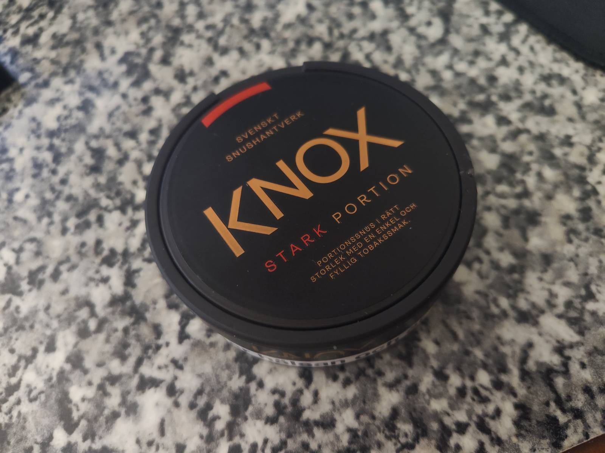
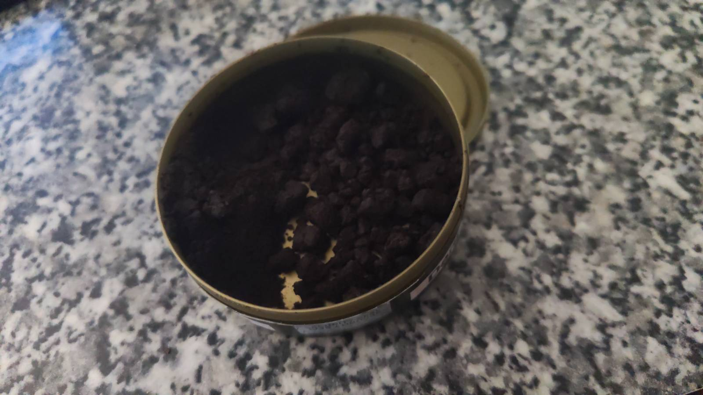

Min Hobby
Snus
Detta underbara, tillfredsställande mästerverk som började produceras i riket sverige för 150 år sedan, plus-minus 10 år. Snus var från början sedd som medicin, för att bota olika åkommor så som huvudvärk, migrän, förstoppning och för att få upp energin. Idag ser vi på det med kanske lite andra ögon. Idag ses det som en livsviktig del av ens vardag och morgonkaffet hade inte smakat det samma utan morronprillan, i alla fall sägs detta av idigna, dedikerade snusare.

Kärt snus har många namn. Detta har jag ställt upp i en lista:
- Prilla
- En pris
- Kram
- Den danska kryptoniten
- Svenskens bäste vän
Snus kommer även i andra former, så som i den kramvänliga varianten som vi kallar för lös-snus. Med denna får man helt enkelt med hjälp av två saker som befinner sig längst ut på våra männskliga armar, också kallad fingrar, krama ihop en liten boll av denna gudagåva för att sen applicera nämnda boll, av all guds glädje, under ens övre läpp.

Lössnuset i sitt vilda habitat
Jömförelse
Men vilken då starkast undrar du såklart när du läser detta? Och vilken är godast? Och finns den i portion eller lös?
DU behöver ej fundera mer, här kommer en topp lista på mina favorit snus
| Märke | Typ | Styrka | Pris | Rank |
|---|---|---|---|---|
| Knox | Portion & Lös | Stark | Mellan | A-tier |
| General | Portion & Lös | Normal | Dyr | B-tier |
| LD | Portion | Stark | Billig | S-tier |
Om du vill kika närmare på dom snusen som är i topplistan så kolla in länken nedanför!(ej sponsrad av snusbolaget tyvärr)